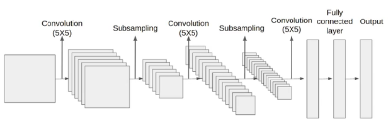

Machine Learning CS460 : Group 12
Course Instructor : Dr. Subhankar Mishra
Group Contributers
Group Repository : Link
- Girish Tripathy
1811072, School of Physical Sciences, NISER
Github - Shashank Saumya
1811143, School of Physical Sciences, NISER
Github
Title of the project :
Multiclass classification of White blood cells using Convolutional Neural Network (CNN)
Biological Background of the project
WBCs (White Blood cells) also known as leukocytes are the cells of immune system that are involved in protecting the body against both
infectious invadors and foreign diseases.
Depending upon the presence of small structures known as granules, WBCs are classified into two different types:
- Granulocytes: Presence of Granular cytoplasm
- Agranulocytes: Absence of Granular cytoplasm
Granulocytes:
- Basophil: About 0.4% in adults. Responsible for allergic and antigen response by releasing a chemical called histamine. Since they are rarest of the EBC and share similarities between other types of cell, they are difficult to study, hence we dont have any data of the same
- Eosinophil: About 2.3% in adults. Can be distinguished as Bi-lobed nucleus. It rises in responce to allergies, parasitic infections and disease of the spleen and central nervous systems.

-
Neutrophil: About 60-70% in adults. Can be distinguished as Multilobed nucleus. Responsible for protection against bacterial or fungal infections.

Agranulocytes:
-
Monocyte: About 5.3% in adults. Can be distinguished as the largest nucleus. Responsible for phagocytoses of used up neutrophils.

-
Lymphocyte: About 30% in adults. Can be distinguished as eccentric nucleus.

Motivation and plans :
There is a need to quickly identify blood cells at bulk in the medical field. We propose using a CNN to build a machine which can classify the stained cells to the type of WBCs. The reason we use CNN is because it is known for its high accuracy when it comes to image recognition.
We plan to first get the RGB info on each pixel of the image. The stained cells are of a different colour from the other cells so it would be easier to identify the pixels which contain the WBC under inspection. Then we will use a CNN and train it to get a model which will be able to classify an image containing a stained WBC.
KYD : Know Your Dataset
The dataset we will using is WBC Classification dataset uploaded on Kaggle by Paul Mooney.
The database consist of about 10,000 images of White blood cells, divided into 4 different classes. Each class have about 2500 RGB images of dimention 320 x 240.
Midway plans and Work Division :
Our Midway plans are follows- Learn about neural networks from various sources
- Cleaning our data and Preprocessing
- Have a simple CNN model trained and ready to predict
Work Division :
- Refinement and preparing the dataset : Shashank (Image to data squeezing, reshaping), Girish (Finding the Optimal way to work with the data)
- Planning and coding the model :- Girish + Shashank
- Report Writing, presentation and Website maintainance : Girish
Midway Works :
Up till now we have done the following:
- Learnt about the theory behind NN and CNN
- Read the relevant papers
- Done some experimentation of various dataset including ours
What is a NN and CNN?

Neural Network (NN) also known as Artificial Neural Network (ANN) as the name suggest is a network of neurons or nodes and forms the basis of Machine Learning and heart of the deep learning algorithms.
It mimics a network of biological neurons. All the different neurons or nodes are connected to each other by weights giving a layer liked structure. A positive weight corresponds to excitory connection and a negative weight corresponds to inhibitory connections.
This weights can be found out or calculated during the traning of the machine learning model.
The first layer of a NN is known as input layer, the last layer is known as output layer. The layers in between both, is known as hidden layer. Number of hidden layers is decided considering the dataset and complexity of the model.
Backpropagation is an important algorithm by which a neural network learns from its own mistakes.
There are various types of Neural networks like Artificial neural network (ANN), Convolutional Neural Network (CNN), Recurrent Neural Network (RNN), Long short term memory neural network (LSTM) etc.
Each type of Neural network have its own uses.
Neural Network that is frequently used for image classification is Convolutional Neural network (CNN). CNN is a type of NN with another hidden layer known as "convolution layer".
A convolution layer have multiple filters, each filter tried to find a particular pattern. Lets say we are trying to classify an image into birds. A convolution layer will have multiple filters, like a beak filter which detect pattern in beaks of the bird, or a eye filter which detects eye of a bird. These filters or nodes will activate nodes of another convolution layer which might have a head filter or a body filter. When all the required filters or nodes get activated, the output layer will gives us the type of bird we are trying to classify bases on the input of the hidden layers.

We will be using Sequencial method from Keras API in tensorflow library to build our model. We will also be using other functions and method for preprocessing of the image and furthur tweaking of the model.
The CNN model we have, have different Conv2D layers, pooling layers and Dense layers. Number of each layer is a hyperparameter we can tune and test. Our basic CNN is illustrated by the image below

Some Analysis of the papers
Paper 1
- Important points and analysis on Paper 1: WBC Classification using CNN, Mayank sharma, Aishwarya Bhave and Rekh Ram Jaghel
- Use the same WBC data (with some augmentation and downsizing)
- Use a 7 layered (LeNet) CNN model
- Tried for different epochs and Learning rates
- Best results at 20 epochs and 0.001 Learning rate (0.8793 Accuracy)
-
Important points and analysis on Paper 2: Counting and Classification of WBC using ANN, Shubham Manik, lalit Mohan Saini and Nikhil Vadera
- They have the image of a slide which contains multiple WBCs
- Used Image Segmentation Techniques likes Cell and Nucleus Segmentation
- Morphological features are extracted like, Cell area, nucleus area, area ratio, number of lobules in nucleus, etc
- Use NN to perform multiclass Classification
- However, they only had 90 leukocyte (WBC) samples which is very small data
- The accuracy was around 98.9%
Various experiments we have done. Link to the codes
| Experiment No. | Dataset | Model | Optimiser | Activation Function | Training Accuracy | Testing Accuracy |
| 1 | Mnist | NN Single Layered | Adam | Sigmoid | 98 % | 93 % |
| 2 | Mnist | NN Multi Layered | Adam | Sigmoid | 99 % | 98% |
| 3 | Cifar10 | NN Multi Layered | SGD | Sigmoid | 99 % | 55 % |
| 4 | Cifar10 | NN Multi Layered | Adam | Softmax | 98 % | 48 % |
| 5 | Cifar10 | NN Multi Layered | SGD | Softmax | 98% | 56 % |
| 6 | Cifar10 | CNN Multi layered | Adam | Softmax | 93 % | 68% |
| 7 | WBC | CNN Multilayered | Adam | Softmax | 100 % | 48% |
Future ideas and comments on the current experiments
- Understand LeNet and if possible come up with a better model/layer combination
- Our CNN model is getting overfitted on the databases. This maybe due lack of data augmentation. To tackle that, we are thinking to do the following
- Use data augmentation, resizing etc.
- Use image segmentation method to separate the nucleus from the image, and train the model on that
- Use GridSearchCV for tuning of hyperparameters
Final Works
Till now we are able to do the following:
- Generated data from image augmentation, but could not train our model on the same due to Out of memory errors.
- Did image segmentation techniques to extract the nucleus from the image
- Tried out regularisation techniques to tackle overfitting
- Tried out Keras Tuner for hyperparameters
Image Augmentation
Image augmentation is a technique to produce more data from an existing dataset. This helps the model to train on a wider range of Dataset and hence train more efficiently.
For the Image augmentation we have used Image Data Generator function from the Keras API in Tensorflow Library. The augmentation parameters are as given below

The function driving this generator, gets the image, turn it into an array, apply the augmentations and saves the image to a given directory using .flow function in the Image Data generator.
Image Segmentation
As we observed earlier, using the original image dataset didnt gave us good results so we went with the Segmentation. What our aim was to extract out the image of the nucleus and/or cell, and train our model on the same.We explored 2 image segmentation techniques, known as cell segmentation and nuclus segmentation.
-
Cell Segmentation:
The method summary is shown in the figure below.

We began with taking the grayscale image and apply Adaptive Histogram Equalisation (AHE) on it. AHE is a technique that improves the contrast difference in the image. Then, different thresholding algorithms were tested on it.
Thresholding is a technique where once you select a threshold and make all values above it 1 and below it 0. This left us with binary image with black background containing white holes at the postition of the cells. The thresholding algorithms that worked well were otsu isodata and mean thresholding. After that we used erosion for hole filling. Erosion is a technique which removes small black areas within larger white areas. We got good results for images with otsu thresholding only. So, we dropped the other thresholding algorithms. Then, finally using Image opening we were supposed to get rid of all white holes except for the one with WBC. However, we were unable to achieve this. So, instead we went with Nucleus Segmentation. -
Nucleus Segmentation:
The method summary is show in the figure below.

First the RGB values of image is converted into HSV values where, H = Hue, S = Saturation and V = Value. Then we separate the saturation image and treat it as a separate grayscale image. The reason for this is because the stained nucleus has a considerabely higher saturation value as compared to other regions in the image. Then using a threshold, we were able to separate them. Three different algorithms gave us decent results. They were otsu, isodata and minimum thresholding. However, none of them worked perfectly for every image. So, we compared the results of each thresholding algorithm for random samples from the data and finally settled on otsu thresholding. Now we have a binary image with white nucleus and black background. Then we multiplied its values with the original grayscale image to crop out the region containing the nucleus.
Regularisation
Apart from augmentation and segmentation another technique used for solving the problem of overfitting is the technique called as Regularisation.
There are different types of regularisation known as L1 regularisation, L2 regularisation, Dropout regularisation etc. For CNN models, Dropout regularisation is widely used.
Dropout Regularisation

As the name suggests, dropout regularisation layer "drops out" or ignores a given percentage of nodes in a layer while the training the epoch or it can be said that it temporarily removes those particular nodes from the network. The nodes are randomly selected in each iteration. The dropping percentage is again a hyperparameter that can be tuned, although in many papers it is said that, ideal dropout parameter for a hidden layer is between 0.5 to 0.8.
Experimentations and different models : Link to the codes
- Model 1
Base Model CNN Multilayered Adam Optimiser Softmax Activation Training : 99.97 % Testing : 27.51%

As it can be observed from the confusion matrix, the model is a overfitted one. This model is used as a base model and all the hyperparameter tuning is done on this model -
Model 2
Added image segmentation CNN Multilayered Adam Optimiser Softmax Activation Training : 98 % Testing : 70 %

This model with image segmentation worked a little better than the previous one, so we are on the right direction. -
Model 3
Added a dropout layer CNN Multilayered Adam Optimiser Softmax Activation Training : 83 % Testing : 74 %

Adding a dropout regularisation layer made the training accuracy a bit better. -
Model 4
Image segmentation 2.0 CNN Multilayered Adam Optimiser Softmax Activation Training : 98.74 % Testing : 72 %

-
Model 5
Image Segmentation 2.0 with dropout layer CNN Multilayered Adam Optimiser Softmax Activation Training : 89.74 % Testing : 77 %

This is by far, the best model we were able to get by hyperparameter tuning.
Problems so far and possible fixes
- Not able to train on the augmented data, can be solved by doing batchwise training of model on the augmented images
- Not clear image even after image segmentation, image needs to be cropped
- Model getting confused in Class 1 (Eosinophil) and class 4 (Nutrophil). Maybe due to similar structure of nucleus
Relevant Paper and Sources:
- Sharma M., Bhave A., Janghel R.R. (2019) White Blood Cell Classification Using Convolutional Neural Network. In: Wang J., Reddy G., Prasad V., Reddy V. (eds) Soft Computing and Signal Processing. Advances in Intelligent Systems and Computing, vol 900. Springer, Singapore. https://doi.org/10.1007/978-981-13-3600-3_13. Link
- S. Manik, L. M. Saini and N. Vadera, "Counting and classification of white blood cell using Artificial Neural Network (ANN)," 2016 IEEE 1st International Conference on Power Electronics, Intelligent Control and Energy Systems (ICPEICES), 2016, pp. 1-5, doi: 10.1109/ICPEICES.2016.7853644. Link
- Image recognition using convolutional neural network combined with ensemble learning algorithm, Weilong Mo et al 2019 J. Phys.: Conf. Ser. 1237 022026 Link
- Q. Li, W. Cai, X. Wang, Y. Zhou, D. D. Feng and M. Chen, "Medical image classification with convolutional neural network," 2014 13th International Conference on Control Automation Robotics & Vision (ICARCV), 2014, pp. 844-848, doi: 10.1109/ICARCV.2014.7064414. Link
- Jiaohua Qin, Wenyan Pan, Xuyu Xiang, Yun Tan, Guimin Hou, A biological image classification method based on improved CNN, Ecological Informatics, Volume 58, 2020, 101093, ISSN 1574-9541, https://doi.org/10.1016/j.ecoinf.2020.101093. Link